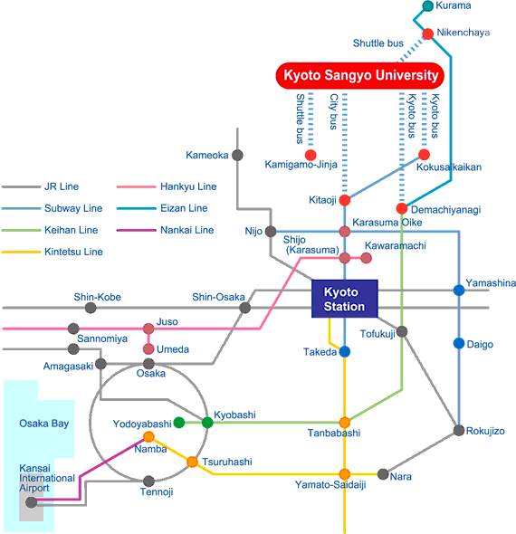
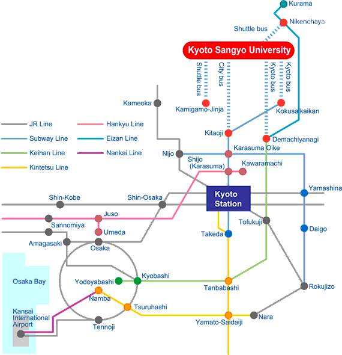

Transport Map
! This page is under construction. !
*** The shuttle bus will not be available during the conference due to summer vacation. ***

! This page is under construction. !
*** The shuttle bus will not be available during the conference due to summer vacation. ***
